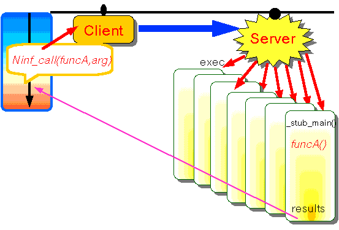

ネットワーク数値情報ライブラリ
Ninf: A Network based Information Library
for Global World-Wide Computing Infrastructure
以下のような不満や希望はありませんか？
Ｎｉｎｆはこれに応えて設計しています
 スーパーコンピュータに載っている素晴らしいライブラリを使ってみたい
スーパーコンピュータに載っている素晴らしいライブラリを使ってみたい
- だけど，プログラム書いたり最適化が面倒
- マニュアルを読むのが大変
- 数値表現が違うんだって？
- グラフィックスはＰＣ・ＷＳを使いたいんだけど
- データの入力書式を書くのが面倒
- ＯＳやコンパイラオプションも知りたくない
- プログラムはできるだけ変更したくない
- ライブラリがたくさんあってどれを使っていいかわからない
ちょっとした（行列・特殊関数）計算をしたいのだけど
- 電卓じゃ役不足
- プログラムを書くほどじゃないし
- MATLAB, MATHEMATICA, EXCEL も重たい
- 簡単なインターフェースはないの？
数値定数が必要なんだけど
- 書き写すのが間違いの元
- そもそも面倒
- 単位系の変換も大変
- 新事実への追従
- データの維持が面倒
自分のプログラムは正しいのかなぁ？
- 同じ定数（データ）を使っているのかな
- ライブラリもシステムによって精度が違うぞ
- 世の中のテスト問題で簡単に検証したい
- 他のプログラムと一部だけ取り替えて比較したい
世界中の計算機を使えば速くできるのに
- どうやって使えばいいの？
- 負荷分散はどうするの？
- プログラムを書き直すのはいやだ
 ネットワーク数値情報ライブラリＮｉｎｆ概要
ネットワーク数値情報ライブラリＮｉｎｆ概要

- Ｐｒｅ−Ｃｏｍｐｉｌｅされた関数・ライブラリの実行形式や
データを広域分散化したサーバー上に保存し，ネットワーク
環境においてユーザからの要求に応じて計算結果を戻す
遠隔手続呼び出しのシステム
- ユーザは標準的数値ライブラリ，特殊関数，数値定数等に
ユーザプログラムの変更を最小限に留めたまま容易にアク
セスできるシステム
- ユーザはライブラリのコンパイル手法，存在場所，呼出方法に
対する知識の一部などを隠蔽するシステム
ソフトウエアの静的配布
問題点：
- 簡単な関数の実行にも面倒な手間
- プラットフォームへの依存性
- ソフトウエアの信頼性，バージョン管理
Ｎｉｎｆリモートライブラリ実行

- すべてのライブラリを実行形式で格納
- ＯＳ，最適化手法，ハードウエアの特性を
気にしなくてよい （予めサーバー側で実現することが可能）
- ユーザはライブラリのインタフェースを指定
 Go Back
Go Back
TOP